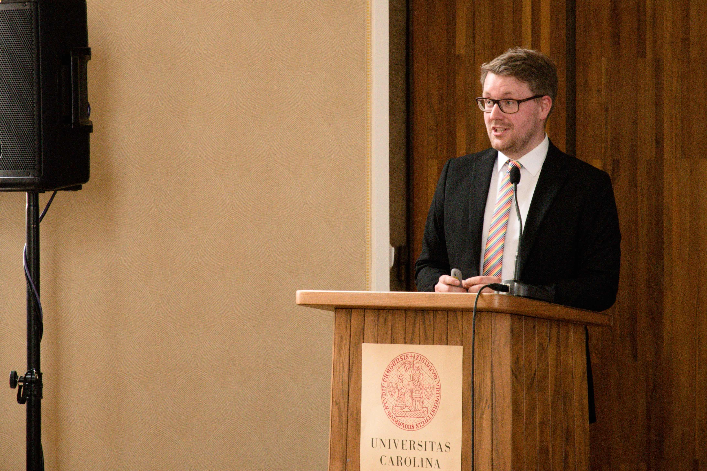

Paul Breiding
Universität Osnabrück
FB 6 Mathematik/Informatik/Physik
Albrechtstr. 28a
D-49076 Osnabrück
Email: pbreiding@uni-osnabrueck.de
Professor for Mathematical Methods in Data Science at the University of Osnabrück. I am part of the working group Applied Algebra and Data Analysis and the Research Unit Data Science.
My research is in nonlinear algebra.
(Take a look at our expository article.)
Metric Algebraic GeometryOur book Metric Algebraic Geometry is available for download. My coauthors are Kathlen Kohn and Bernd Sturmfels. |
|
ICERM Special SemesterI co-organize an ICERM special semester on Metric Algebraic Geometry: Going Global (Jan 20 - Apr 23, 2027). Applications are now open through CUBE. |
|
HomotopyContinuation.jl |
|
Pencil-based algorithms are not stableCarlos Beltran co-produced this video about one of our papers. |